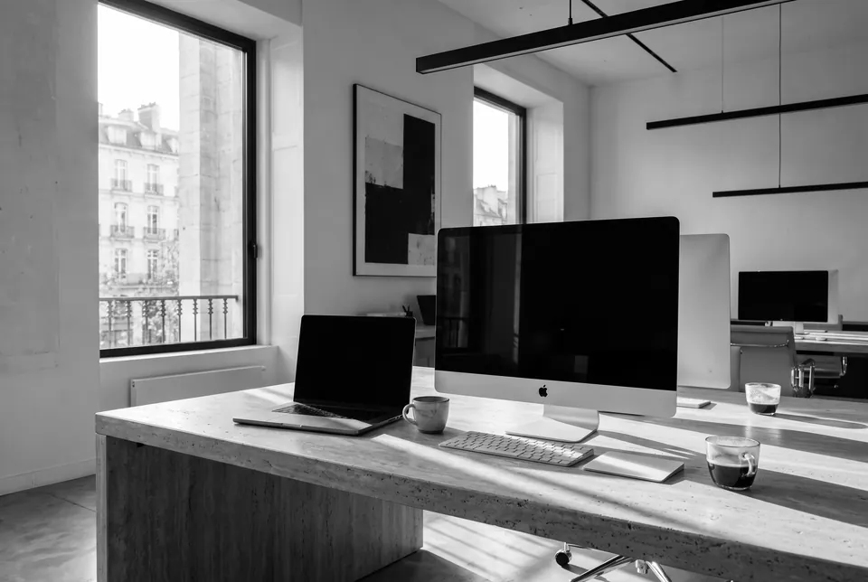
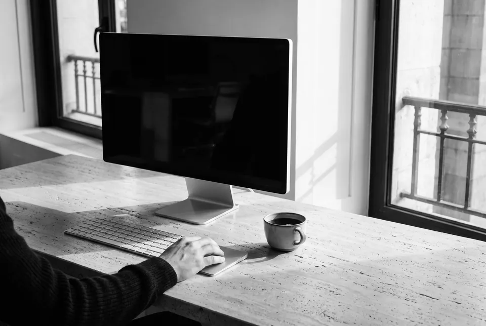

Studio
We build websites that feel like a place you visit, not a page you scroll: light, depth and motion, made by hand.
About Us
We’re a small studio building websites that feel like places.
01
Company origins
D Web Studio was founded on one conviction: a website can be somewhere you go, not just something you read. We started building sites the way films are made, from a single image of how they should feel, followed all the way down. That idea is still the first thing we bring to every project.
D Web designs and builds immersive websites for brands that want a first visit to be remembered. We design and code every frame ourselves: real-time 3D, motion and sound. We take on only a few projects a year, so each one gets the whole studio, from the first sketch to the last transition.
Founder & Creative Director: Álvaro Rodríguez

02
Mission
Making the web feel like a place again

Our mission is clear: to build websites people remember. It starts with a feeling, and every decision answers to it: the type, the light, the pace of a scroll, the last transition. A site has to do more than look right. It has to draw you in, hold you there, and stay with you after you leave.
We tell each story through type and light, pace and depth, and we care about the frame rate as much as the colour. A site isn’t finished when it looks right, but when it feels right.
The D Web Studio creative team

- Álvaro Rodríguez
Each of us brings a different craft to the same table: design, real-time 3D, motion, sound and code. Working as one small team, we share every decision, so an idea never gets lost between departments.
We are driven by questions. How does light move under water? Why does one scroll feel heavy and another weightless? What makes someone stay on a page a little longer? Our curiosity about how things work, and how people feel them, leads us to research every project in depth.
Our first question is always the same: what should a visitor feel in the first second? Everything else follows from the answer.
We’re a small studio building websites that feel like places.

Tell us what your site should make people feel. We’ll take it from there: the story, the light, the motion, frame by frame, until it’s somewhere people want to stay.
Have something worth the dive?
Start your project ↓ 4,800 m